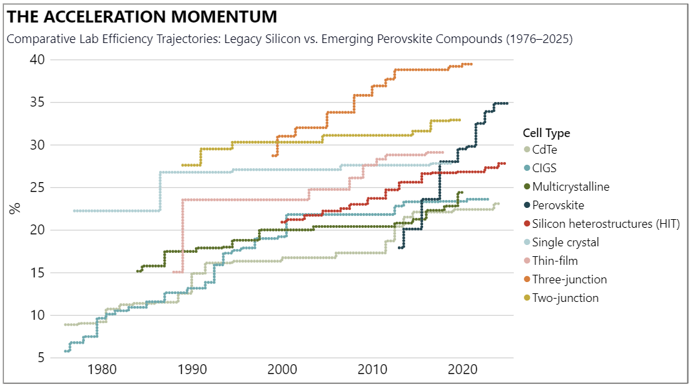
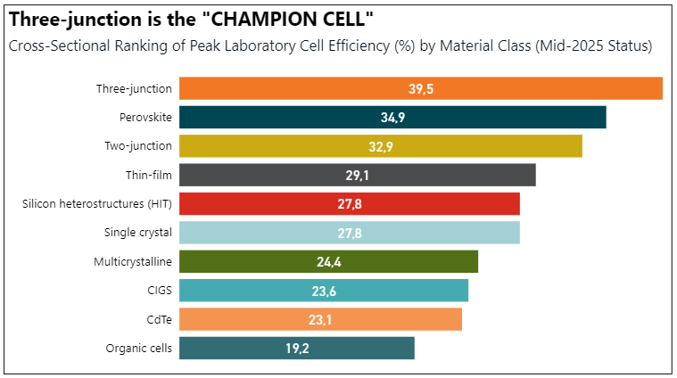

Insights on solar photovoltaic technology.
For the past decade, the solar industry has been defined by a "race to the bottom" in manufacturing costs. However, as silicon approaches its theoretical physics limit — the Shockley-Queisser limit of ~29% — the industry faces a structural transition. The decisive question is no longer "how cheap can we make a panel?" but "how much energy can we extract from a single cell?"
The following analysis is based on Cell efficiency data as of mid-2025. It is critical to note that these figures represent controlled lab conditions. While they do not yet reflect the "Engineering Tax" of mass-produced modules, these lab benchmarks serve as the leading indicators for the next decade of commercial hardware, revealing the "North Star" of project densification.

Data source: NREL
The data highlights a profound momentum shift. While Single Crystal Silicon and Silicon Heterostructures (HIT) have spent nearly four decades creeping from 22% to a current lab plateau of approximately 27,8%, Perovskite technology has achieved a nearly vertical ascent.
Emerging from a niche 13,7% in 2013 to hitting a record 34,9% by early 2025, Perovskites represent the most significant disruption in PV history. This trajectory suggests that the technological "learning curve" for Perovskites is moving at roughly 4x the speed of traditional silicon, signaling a looming transition toward Tandem-cell dominance.

Data source: NREL
This ranking reveals the Systemic Utility of different architectures. Three-junction cells lead at 39,5%, but their complexity tethers them to high-CAPEX niche applications. The "Decisive Middle" is now dominated by Perovskites (34,9%) and Two-junction cells (32,9%).
Conversely, legacy utility-scale materials like CdTe (23,1%) and CIGS (23,6%) are facing "efficiency erosion" in the lab relative to the new leaders. This creates a strategic divergence: while older thin-films offer current cost advantages, their lower efficiency ceilings mean they will eventually require significantly more land and infrastructure (BOS) per megawatt compared to the emerging Perovskite-Silicon tandem standard.
The shift from "commodity-scale" to "performance-scale" is inevitable. Although these results are currently confined to the lab, they dictate the long-term value of solar assets. As cell efficiency converges with mass-manufacturing scaling, we will see a fundamental redesign of solar deployments.
Higher cell efficiency translates to higher energy density, allowing for more power generation closer to load centers and making projects more competitive in high-value, land-constrained grid interconnects.